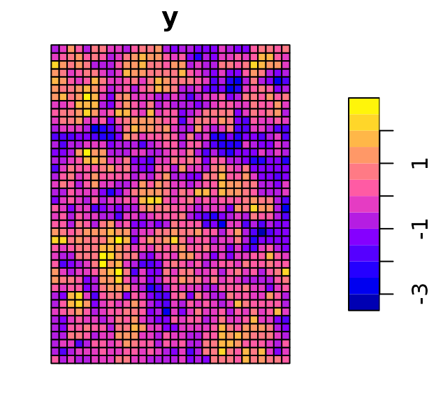

vignettes/raster-regression.Rmd
raster-regression.RmdThis vignette provides a tutorial for fitting spatial regression models to raster data using geostan. The term “raster” is used here to refer to any regularly spaced set of observations such that the data can be represented spatially by a rectangular grid or lattice. Remotely sensed imagery is a common form of raster data.
For an irregular spatial lattice and moderately big N, the best one can do (for now) is to save the sar_list or car_list in a file (using saveRDS(sar_list, "sar-parts.rds") or similar) so that it only needs to be calculated once.
Start by loading the geostan and sf packages:
We will create a small raster data layer for the purpose of illustration.
# creating a grid
row <- 40
col <- 30
c(N <- row * col)## [1] 1200
sfc = st_sfc(st_polygon(list(rbind(c(0,0), c(col,0), c(col,row), c(0,0)))))
grid <- st_make_grid(sfc, cellsize = 1, square = TRUE)
grid <- st_as_sf(grid)
# create connectivity matrix
W <- shape2mat(grid, style = "W", method = "rook", quiet = TRUE)
# draw data from a spatial autoregressive model
set.seed(100)
grid$z <- sim_sar(rho = 0.8, w = W)
grid$y <- sim_sar(mu = -0.5 * grid$z, rho = .9, sigma = .3, w = W)
plot(grid[ , 'y' ])
The following R code will fit a spatial autoregressive model to these data:
fit <- stan_sar(y ~ z, data = grid, C = W)The stan_sar function will take the spatial weights matrix W and pass it through a function called prep_sar_data which will calculate the eigenvalues of the spatial weights matrix using Matrix::Schur. This step can be prohibitive for large data sets (e.g., \(N = 100,000\)).
The following code would normally be used to fit a conditional autoregressive (CAR) model:
C <- shape2mat(grid, style = "B", queen = FALSE)
car_list <- prep_car_data(C, "WCAR")
fit <- stan_car(y ~ z, data = grid, car_parts = car_list)Here, the prep_car_data function calculates the eigenvalues of the spatial weights matrix using Matrix::Schur, which is not feasible for large N.
The prep_sar_data2 and prep_car_data2 functions are designed for large raster layers. As input, they require the dimensions of the grid (number of rows and number of columns). The eigenvalues are produced very quickly using Equation 5 from Griffith (2000). The methods have certain restrictions. First, this is only applicable to raster layers—regularly spaced, rectangular grids of observations. Second, to define which observations are adjacent to one another, the “rook” criteria is used (spatially, only observations that share an edge are defined as neighbors to one another). Third, the spatial adjacency matrix will be row-standardized. This is common anyways for SAR and CAR models (it corresponds to the “WCAR” specification of the CAR model (see Donegan 2022)).
The following code will fit a SAR model to our grid data (without any use of shape2mat) and is suitable for larger raster layers:
# create connectivity matrix and its eigenvalues
sars <- prep_sar_data2(row = row, col = col, quiet = TRUE)
# if you want the matrix
W <- sars$W
# fit model
fit <- stan_sar(y ~ z,
data = grid,
centerx = TRUE,
sar_parts = sars,
iter = 500,
chains = 2, # for demo speed
# cores = 4, # multi-core processing
slim = TRUE
) ##
## *Setting prior parameters for intercept## Distribution: normal## location scale
## 1 0.18 5##
## *Setting prior parameters for beta
## Distribution: normal## location scale
## 1 0 5##
## *Setting prior for SAR scale parameter (sar_scale)## Distribution: student_t## df location scale
## 1 10 0 3##
## *Setting prior for SAR spatial autocorrelation parameter (sar_rho)## Distribution: uniform## lower upper
## 1 -1 1
##
## SAMPLING FOR MODEL 'foundation' NOW (CHAIN 1).
## Chain 1:
## Chain 1: Gradient evaluation took 0.002153 seconds
## Chain 1: 1000 transitions using 10 leapfrog steps per transition would take 21.53 seconds.
## Chain 1: Adjust your expectations accordingly!
## Chain 1:
## Chain 1:
## Chain 1: Iteration: 1 / 500 [ 0%] (Warmup)
## Chain 1: Iteration: 251 / 500 [ 50%] (Sampling)
## Chain 1: Iteration: 500 / 500 [100%] (Sampling)
## Chain 1:
## Chain 1: Elapsed Time: 3.107 seconds (Warm-up)
## Chain 1: 2.082 seconds (Sampling)
## Chain 1: 5.189 seconds (Total)
## Chain 1:
##
## SAMPLING FOR MODEL 'foundation' NOW (CHAIN 2).
## Chain 2:
## Chain 2: Gradient evaluation took 0.001209 seconds
## Chain 2: 1000 transitions using 10 leapfrog steps per transition would take 12.09 seconds.
## Chain 2: Adjust your expectations accordingly!
## Chain 2:
## Chain 2:
## Chain 2: Iteration: 1 / 500 [ 0%] (Warmup)
## Chain 2: Iteration: 251 / 500 [ 50%] (Sampling)
## Chain 2: Iteration: 500 / 500 [100%] (Sampling)
## Chain 2:
## Chain 2: Elapsed Time: 3.389 seconds (Warm-up)
## Chain 2: 2.063 seconds (Sampling)
## Chain 2: 5.452 seconds (Total)
## Chain 2:## Warning: Bulk Effective Samples Size (ESS) is too low, indicating posterior means and medians may be unreliable.
## Running the chains for more iterations may help. See
## https://mc-stan.org/misc/warnings.html#bulk-ess
print(fit)## Spatial Model Results
## Formula: y ~ z
## Spatial method (outcome): SAR
## Likelihood function: auto_gaussian
## Link function: identity
## Observations: 1200
## Data models (ME): none
## Inference for Stan model: foundation.
## 2 chains, each with iter=500; warmup=250; thin=1;
## post-warmup draws per chain=250, total post-warmup draws=500.
##
## mean se_mean sd 2.5% 20% 50% 80% 97.5% n_eff Rhat
## intercept 0.185 0.004 0.078 0.028 0.117 0.187 0.247 0.341 419 1.002
## z -0.501 0.000 0.008 -0.517 -0.508 -0.501 -0.494 -0.484 478 0.997
## sar_rho 0.888 0.001 0.013 0.862 0.877 0.890 0.900 0.914 495 0.998
## sar_scale 0.306 0.000 0.006 0.295 0.301 0.306 0.311 0.319 595 0.999
##
## Samples were drawn using NUTS(diag_e) at Wed Oct 30 13:33:12 2024.
## For each parameter, n_eff is a crude measure of effective sample size,
## and Rhat is the potential scale reduction factor on split chains (at
## convergence, Rhat=1).The user first creates the data list using prep_sar_data2 and then passes it to stan_sar using the sar_parts argument. Also, slim = TRUE is invoked to prevent the model from collecting N-length parameter vectors and quantities of interest (such as fitted values and log-likelihoods).
For large data sets and complex models, slim = TRUE can bring about computational improvements at the cost of losing access to some convenience functions (such as sp_diag, me_diag, spatial, resid, and fitted). Many quantities of interest, such as fitted values and spatial trend terms, can still be calculated manually using the data and parameter estimates (intercept, coefficients, and spatial autocorrelation parameters).
The favorable MCMC diagnostics for the above model based on just 200 post-warmup iterations per chain (sufficiently large effective sample sizes n_eff, and Rhat values very near to 1) provides some indication as to the computational efficiency of the models. The point is that the basic spatial autoregressive models can work well for larger data because you only need a modest number of MCMC samples.
Also, note that Stan usually samples more efficiently when variables have been mean-centered. Using the centerx = TRUE argument in stan_sar (or any other model-fitting function in geostan) can be very helpful in this respect. Also note that the SAR models in geostan are (generally) no less computationally-efficient than the CAR models, and may even be slightly more efficient.
To simulate spatially-autocorrelated data on a regular grid use the quick = TRUE argument in sim_sar:
row = 100
col = 100
sar_list <- prep_sar_data2(row = row, col = col)
W <- sar_list$W
z <- sim_sar(rho = .8, w = W, quick = TRUE)
y <- sim_sar(mu = -.5 * z, rho = .9, w = W, quick = TRUE)
dat <- cbind(y, z)Donegan, Connor. 2022. “Building Spatial Conditional Autoregressive Models in the Stan Programming Language.” OSF Preprints. https://doi.org/10.31219/osf.io/3ey65.
Griffith, Daniel A. 2000. “Eigenfunction Properties and Approximations of Selected Incidence Matrices Employed in Spatial Analyses.” Linear Algebra and Its Applications 321 (1-3): 95–112.